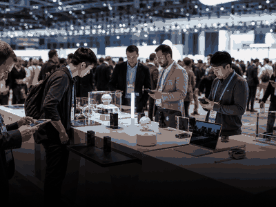

More CultureCulture category
More CultureCulture categoryMore topics, events and calendar moments.
Culture - industry gatherings
Tech events
Trade shows, keynotes and developer gatherings where new hardware and software is unveiled.
 SXSW Interactive
SXSW InteractiveLos Angeles, United States
 Web Summit Lisbon
Web Summit LisbonBarcelona, Spain
 VivaTech Paris
VivaTech ParisParis, France
 Slush Helsinki
Slush HelsinkiBerlin, Germany
 London Tech Week
London Tech WeekLondon, United Kingdom
 TechCrunch Disrupt
TechCrunch DisruptLos Angeles, United States
 GITEX Global
GITEX GlobalDubai, United Arab Emirates
 RISE Asia
RISE AsiaShanghai, China
 Dublin Tech Summit
Dublin Tech SummitLondon, United Kingdom

CES